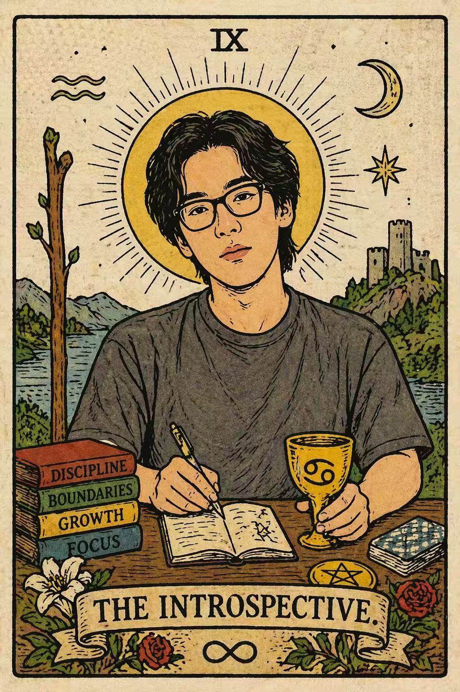

I study zero-knowledge proofs, and other practical cryptographic systems, with a focus on integrating privacy in production-level environments.

About Me
I'm a third-year PhD student in cryptography at Northwestern University, advised by Prof. Xiao Wang. Before joining Northwestern, I obtained my bachelor's degree from the ACM Honors Class, Shanghai Jiao Tong University. In my junior year at SJTU, I worked as a student intern at LATTICE Lab, advised by Prof. Yu Yu. During this internship, I mainly worked on proving the security of cryptographic primitives with low-level methods. Last fall, I was a research intern at Chainlink Labs, advised by Gregory Neven.
I have experience designing frameworks for efficient ZK systems, implementing both interactive ZK and SNARKs, and integrating ZK tools into production-level systems.
Dung Bui, Haotian Chu, Geoffroy Couteau, Xiao Wang, Chenkai Weng, Kang Yang, Yu Yu. Journal of Cryptology 2024.
This work is done during my internship in Xiao's lab (in my senior year as an undergrad). In this paper, Xiao and I found a general framework for building efficient zero-knowledge proofs, a core technique in modern cryptography.
This is a rather theoretical and algorithmic paper focused on methodological improvement, showing how to transform a parallelized algorithm into general-purpose protocols. We also present concrete instantiations, implementation, and benchmarks.
Private signaling addresses the challenge that users cannot efficiently retrieve their transactions on privacy-preserving chains, where transaction data is encrypted by design. This is a significant bottleneck for user experience in large Web3 systems such as Zcash and Aztec.
Prior work addresses this problem using hardware security, while we provide an algorithmic solution with rigorous mathematical proofs of security. I developed both the core idea and the full implementation independently.